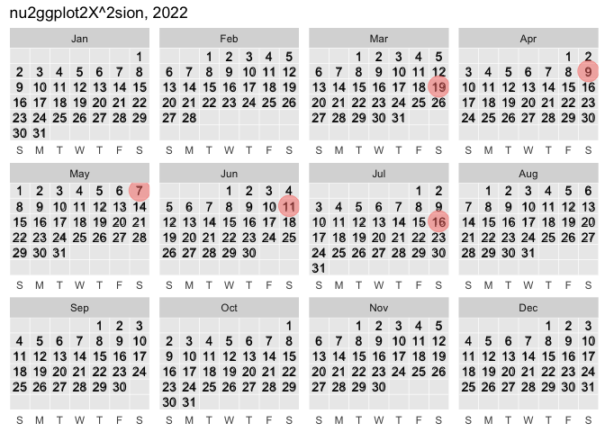

Create grammar of graphics calendars.
library(ggcalendar)
library(ggplot2)
library(lubridate)
#>
#> Attaching package: 'lubridate'
#> The following objects are masked from 'package:base':
#>
#> date, intersect, setdiff, union
library(tidyverse)
#> ── Attaching packages ─────────────────────────────────────── tidyverse 1.3.0 ──
#> ✓ tibble 3.1.6 ✓ dplyr 1.0.8
#> ✓ tidyr 1.0.2 ✓ stringr 1.4.0
#> ✓ readr 1.3.1 ✓ forcats 0.5.0
#> ✓ purrr 0.3.4
#> ── Conflicts ────────────────────────────────────────── tidyverse_conflicts() ──
#> x lubridate::as.difftime() masks base::as.difftime()
#> x lubridate::date() masks base::date()
#> x dplyr::filter() masks stats::filter()
#> x lubridate::intersect() masks base::intersect()
#> x dplyr::lag() masks stats::lag()
#> x lubridate::setdiff() masks base::setdiff()
#> x lubridate::union() masks base::union()# install.packages("devtools")
devtools::install_github("EvaMaeRey/ggcalendar")Example
compute_group_calendar_script <- readLines("./R/compute_group_calendar.R")#' Title
#'
#' @param data
#' @param scales
#'
#' @return
#' @export
#'
#' @examples
#' return_dates_year(1999) %>%
#' head() %>%
#' compute_group_calendar()
#'
compute_group_calendar <- function(data, scales){
data %>%
dplyr::mutate(num_day_of_week = lubridate::wday(.data$date)) %>%
dplyr::mutate(day_of_week = lubridate::wday(.data$date, label = TRUE, abbr = TRUE)) %>%
dplyr::mutate(week_of_month = (- lubridate::wday(.data$date) + lubridate::day(.data$date)) %/% 7 + 1 +
ifelse(lubridate::wday(lubridate::floor_date(lubridate::as_date(.data$date), "month")) == 1, -1, 0)
) %>%
dplyr::mutate(date_of_month = lubridate::day(.data$date)) %>%
dplyr::mutate(which_year = lubridate::year(.data$date) - 2018) %>%
dplyr::mutate(month = lubridate::month(.data$date, abbr = TRUE, label = TRUE)) %>%
dplyr::mutate(hour = lubridate::hour(.data$date)) %>%
dplyr::mutate(academic_year = lubridate::year(.data$date) +
ifelse(lubridate::month(date) >
6, 1, 0)) %>%
dplyr::mutate(academic_month = .data$month %>%
factor(levels = c("Jul", "Aug", "Sep", "Oct", "Nov", "Dec",
"Jan", "Feb", "Mar", "Apr", "May", "Jun"))) %>%
dplyr::mutate(label = .data$date_of_month)
}# compute function
return_dates_year(1999) %>%
head() %>%
compute_group_calendar()
#> date num_day_of_week day_of_week week_of_month date_of_month which_year
#> 1 1999-01-01 6 Fri 0 1 -19
#> 2 1999-01-02 7 Sat 0 2 -19
#> 3 1999-01-03 1 Sun 1 3 -19
#> 4 1999-01-04 2 Mon 1 4 -19
#> 5 1999-01-05 3 Tue 1 5 -19
#> 6 1999-01-06 4 Wed 1 6 -19
#> month hour academic_year academic_month label
#> 1 Jan 0 1999 Jan 1
#> 2 Jan 0 1999 Jan 2
#> 3 Jan 0 1999 Jan 3
#> 4 Jan 0 1999 Jan 4
#> 5 Jan 0 1999 Jan 5
#> 6 Jan 0 1999 Jan 6
## basic example code
return_dates_year(2022) %>%
ggplot(data = .) +
aes(date = date) +
facet_wrap(~month(date, label = T)) +
geom_text_calendar(aes(label = day(date))) +
geom_point_calendar(data = data.frame(date = c("2022-03-19", "2022-04-09")),
color = 'red',
size = 8, alpha = .5) +
geom_point_calendar(data = data.frame(date = c("2022-05-07")),
color = 'goldenrod3',
size = 8, alpha = .6) +
labs(title = "nu2ggplot2X10sion") +
scale_y_reverse()